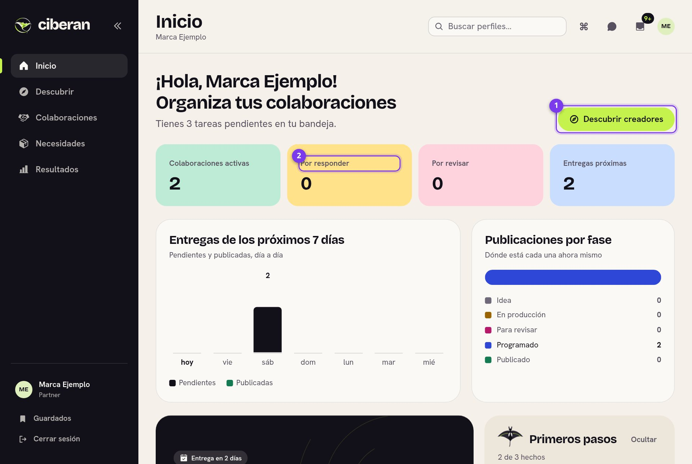
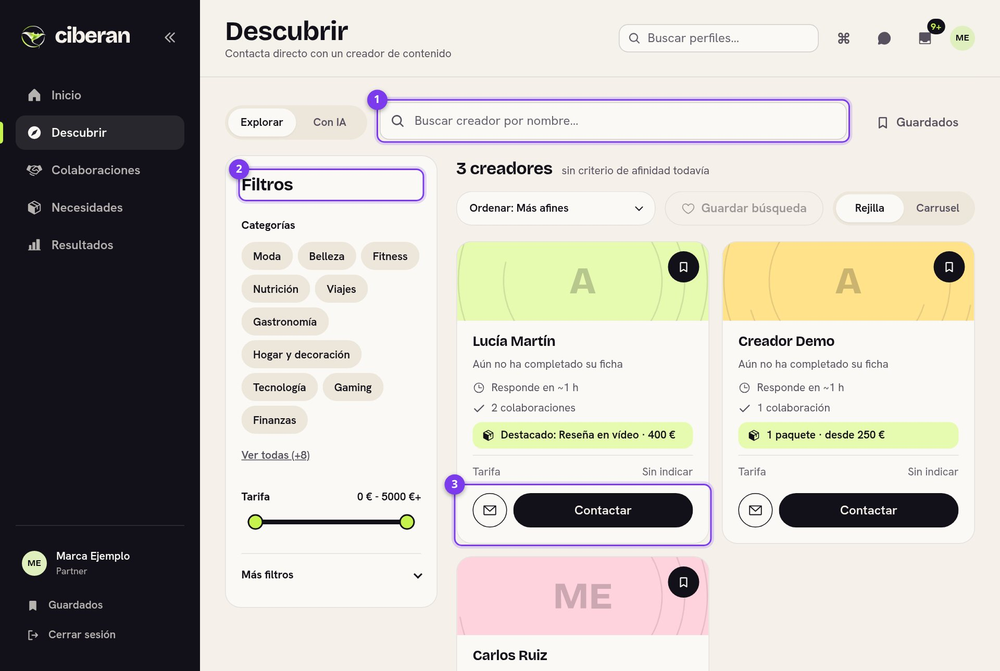

Empieza en 6 pasos
CIBERAN te ayuda a encontrar creadores, acordar las condiciones y revisar el contenido antes de que salga. Es gratis durante el lanzamiento. Para el detalle de cada pantalla, consulta el Manual de usuario.
1. Crea tu cuenta
- Abre CIBERAN y pulsa Crear cuenta.
- Elige Partner, escribe tu nombre, el nombre de la empresa, tu email y una contraseña de al menos 8 caracteres.
- Abre el correo de confirmación y pulsa el enlace. Sin confirmar el email no podrás entrar.
2. Completa tu ficha
- Pulsa tu avatar → Perfil → Editar ficha.
- Añade logo, portada, biografía, categorías, presupuesto y qué tipo de creador buscas.

3. Encuentra creadores
- Menú Descubrir. Filtra por categoría y tarifa, y ordena por afinidad, respuesta o precio.
- Fíjate en cuánto tardan en responder, sus colaboraciones, su paquete destacado y su valoración.
- Guarda con el marcador a los que te interesen y revisa su perfil completo antes de decidir.

4. Contacta y propón
- En la tarjeta del creador, pulsa Contactar (o Invitar a colaborar en su perfil).
- Cuenta tu campaña, pon tu presupuesto y, si quieres, objetivo, público, tono y condiciones.
- Pulsa enviar. Las condiciones quedan fijadas al enviar.
También puedes Hacer oferta sobre un paquete concreto, o Enviar mensaje.
5. Negocia y acepta
El creador tiene 7 días para responder. Puede aceptar, rechazar o hacer una contraoferta. Tú, en el bloque Presupuesto y respuesta:
| Opción | Qué hace |
|---|---|
| Aceptar | La colaboración queda aceptada. |
| Hacer contraoferta | Propones otro importe. |
| Rechazar solicitud | Pide confirmación y no se puede deshacer. |
El Siguiente paso te dice siempre a quién le toca mover ficha.
6. Define, revisa y cierra
- Con la colaboración aceptada, pulsa Completar brief (objetivo, público, tono, condiciones) y Definir entregables (uno por línea). Ambas cosas se fijan una sola vez.
- Cuando el creador envía contenido, aparece en Por revisar: pulsa Aprobar o Pedir cambios (con un comentario concreto).
- Con todo aprobado, pulsa Marcar como completada y valora al creador.

Trucos para ir más rápido
| Quiero… | Cómo |
|---|---|
| Ir a cualquier pantalla | Ctrl + K (o Cmd + K en Mac): escribe unas letras y pulsa Intro. |
| Publicar lo que busco | Menú Necesidades → Añadir necesidad: los creadores te harán ofertas. |
| Encontrar colaboraciones de una misma campaña | Usa el mismo nombre de campaña al contactar. |
| Ver el calendario de entregas | Colaboraciones → Calendario. |
| Exportar mis colaboraciones | Colaboraciones → Exportar CSV. |
| Ver cómo van mis colaboraciones | Menú Resultados. |